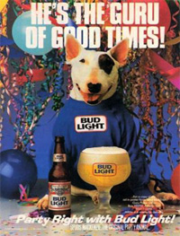
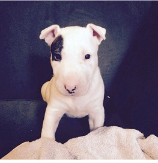
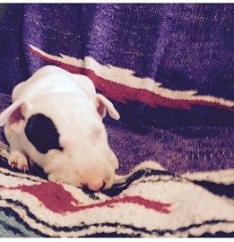
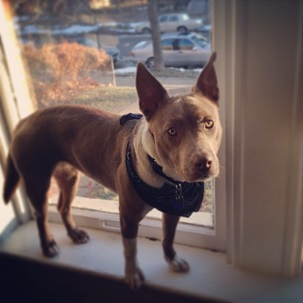
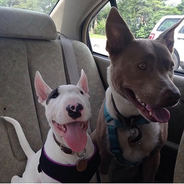
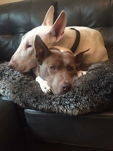

About Otto

Hello there, this is a story about Otto.
He was born April 1st, 2016, which makes sense because he is a fool.
He is an English Bull Terrier, and lives in South City, Saint Louis with his sister, mom, and dad.
A Brief History of English Bull Terriers

English Bull Terriers are a well-known breed. They are known for their round heads and pointy ears (aka eggheads), muscular bodies, and neurotic nature. They can be mischievous, stubborn, and loyal. Some famous bull terriers include: Spuds Mackenzie, Chico from Friday, and Bullseye the Target dog. English Bull Terriers were originally bred for the purpose of dog fighting. They are a mixture of Bulldog, various terriers including Staffordshire, Dalmatian, and the now extinct White Terrier. The original name for English Bull Terriers was "White Cavalier."
Origin Story



Otto came to us in June of 2016. He was extremely small. He had a tiny patch near his eye, and was very responsive to humans. When we got him, he had never been outside on the grass. We took him home and introduced him to his sister, Oakley.

Oakley is a pit/akita mix and a rescue. She is an extremely well-behaved dog, especially compared to her brother, Otto. She was born October 15th, 2013, and she became part of our family when she was 1.5 years old. She was not a fan of Otto.


Otto was quick to learn commands and tricks, but slow to want to listen. He was easily scared, but also kind of a jerk. He would jump on top of Oakley, bite her ear, and then hide under something. Almost four year later, they get along but not much else has changed.